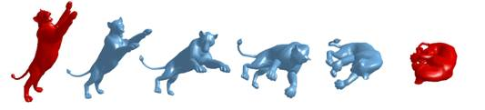
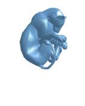

Interpolation between two
shapes
(1) The
following examples 1-4 are interesting test data for evaluating shape
interpolation method. These test data sets are interesting, since their poses vary with different degrees. From our point of
view, the degree of difficulty in these data
sets is example 1, 2, 3 and then
(2) Hope
this web site serves as a test platform to compare different shape
interpolation methods. Welcome your contribution and test your method. Please
send your results to us. Later, we may design more challenging cases if
necessary. Note that our method use shape variation
information to assist shape interpolation. Our mesh reconstruction part
use gradient-based method [2] and [1] used [2], too. So, we currently compare
our method [1] for this study. Other mesh reconstruction can be used instead
such as volume-preserved method etc to preserve volume.
(3) Contributors
l
Prof. Tong-Yee
Lee (for this web site)
l
Dr. Niloy J. Mitra and Martin
Kilian, see their
tested results using their method in SIGGRAPH
2007 [3].
Example1:
(a) Video
created by our method
Description: A lion shape (9996 faces) from a stretched pose to a curled pose. Limbs and tail are bended naturally toward the target pose.
Input:
|
|
|

Several
frames in above video are shown below. Note that source
and target shapes are rendered in red color.

(b) For simple comparison, we generate results (Video) using Poisson shape interpolation [1].
Several
frames in above video are shown below. Results are not good (due to variation
of pose orientation).
(c) Align the target shape with
source one manually and use [1] to generate result (Video).
Input:
|
|
|
|
|
The same as above |
Illustration |
Several frames in above video are shown below. With rough global shape alignment, [1] can generate better result, but still has some defects (see the tail of lion). However, the orientations in this sequence are wrong in contrast to (a). The same problem happens to the following 3 examples.
Example2:
(a) Video created by our method.
Description: Interpolation between two curled poses with near pi rotation of the body.
Input:
|
|
|
Several
frames in above video are shown below.
(b) For another simple comparison, we generate results (Video) using [1].
Several frames in above video are shown below. Results are not good
(due to variation of pose orientation).
(c) Again, we manually align the
target shape with source one and use [1] to generate result (Video).
Input:
|
 |
|
|
|
The same as above |
Illustration |
Several
frames in above video are shown below. Notice the defects appear in the tail
and right-back limb.
Example3:
(a) Video created by our method.
Description: Shape interpolation of a male shape (34970 faces) from a stretched pose into a crouched pose. Notice the natural bending of the body, limbs and fingers, and the preservation of the local details (lines of the muscle) during the interpolation. To test verify your results, you may check if fingers can change its pose smoothly in your result.
Input:
|
|
|
Several
frames in above video are shown below.
(b) Another interpolation result (Video) shows the comparison with [1].
Several
frames in above video are shown below. The defects (left-fore arm and all
fingers) appear due to the same reason (wide pose variation).
(c) With the aid of global shape
alignment, [1] generates better result (Video),
but the still fails in finger parts which represent highly articulated
structure.
Input:
|
|
|
|
|
The same as above |
Illustration |
Several frames in above video are shown below.
Example4:
(a) Video created by our method.
Description: Another example of male¡¦s shape interpolation. In this example, the pose is varied significantly in body¡Blimbs and fingers and is the most challenging one in our experiments.
Input:
|
|
|

Several
frames in above video are shown below.
(b) Interpolation result (Video) of [1].
Several
frames in above video are shown below.
(c) (Video):
Even with the aid of global shape alignment, the improvement to the result of [1]
is little. We believe that the more the complexity of the articulated structure
of the shape the difficulty of the pose interpolation will be increased.
Input:
|
|
|
|
|
The same as above |
Illustration |
Several
frames in above video are shown below.
Reference
[1] Dong Xu,
Hongxin Zhang, Qing Wang, Hujun Bao. Poisson Shape
Interpolation. ACM Symposium on Solid and Physical Modeling, 2005
[2] YU, Y., ZHOU, K., XU, D.,
SHI, X., BAO, H., GUO, B., AND SHUM, H.-Y. 2004. Mesh
editing with Poisson-based gradient field manipulation. ACM Trans.
Graph. 23, 3, 644.651.
[3] Martin Kilian, Niloy J. Mitra, Helmut Pottmann, Geometric
Modeling in Shape Space, ACM SIGGRAPH 2007.